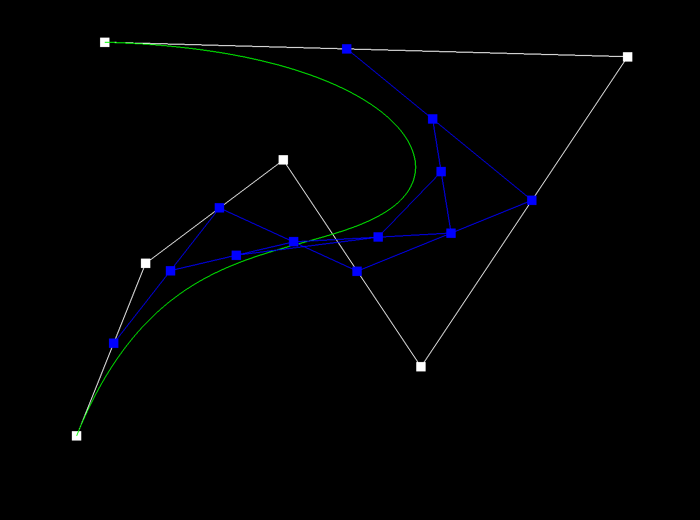

Overview
In this assignment, I implemented de Casteljau's algorithm to evaluate Bezier curves and Bezier surfaces, learned how to implement area-weighted vertex normals and edge flip and slipt operation using halfedge, and finally how to implement the loop subdivision for mesh upsampling. Overall, I built 3d models that can change their smoothness based on my desired sampling methods and their edges can be modified based on my flip or slit operations. I learned many interesting ideas and knowledges from this assignment. I found the flip and slit operations especially interesting and had fun reassigning various pointers for the halfedges during my implementation.
Section I: Bezier Curves and Surfaces
Part 1: Bezier Curves with 1D de Casteljau Subdivision
Briefly explain de Casteljau's algorithm and how you implemented it in order to evaluate Bezier curves.We try to find the point of the curve defined by the given control points. As of we have a n order of control points, we each time runs evaluatestep by doing linear interpolation between two edged controlpoint to find n-1'th order's control points at interpolation value t. Until we reduced to order 1 with single point left which will define our drawn curve. And for every value t from 0 to 1 we will then have our curve.
Take a look at the provided .bzc files and create your own Bezier curve with 6 control points of your choosing. Use this Bezier curve for your screenshots below.
YOUR RESPONSE GOES HERE
Show screenshots of each step / level of the evaluation from the original control points down to the final evaluated point. Press E to step through. Toggle C to show the completed Bezier curve as well.
|
|

|
|

|
|
|
|
Show a screenshot of a slightly different Bezier curve by moving the original control points around and modifying the parameter \(t\) via mouse scrolling.
Part 2: Bezier Surfaces with Separable 1D de Casteljau
Briefly explain how de Casteljau algorithm extends to Bezier surfaces and how you implemented it in order to evaluate Bezier surfaces.Extending from part 1 moving the curve into 3D, we will now have to considered the surface to be drawn by as set of n*n control points. For each row of the control point. We reduce each row's control points into a single point by a calling evaluate1D with given u as t, which we reduced the n * n points into 1 * n points. Finally we run evaluate1d with these point with v as t to get our final 3D vector for our given u,v.
Show a screenshot of bez/teapot.bez (not .dae) evaluated by your implementation.
Section II: Triangle Meshes and Half-Edge Data Structure
Part 3: Area-Weighted Vertex Normals
Briefly explain how you implemented the area-weighted vertex normals.I iterate through faces (triangles) incident to the vertex using the method shown in halfEdgeMesh.h, which start with h = this->halfedge(); increment by h = h->twin()->next(); while(h != this->halfedge()); Then for each halfedge, if it is not boundary, I get the three vertex of the triangle using the next() operation and two of the three edges using the vertex. Then I calculate the normal using cross of two edges since, according to the spec, a normal of a face is defined as a vector perpendicular to the surface at a given point and the cross product of two vectors along the face would return a third vector perpendicular to the two vectors. Then I used the same method as homework 1 to calculate the area of the triangle and multiply the area and the normal together for each looped halfedge and add it to the return value. At the end of loop I normalize the return value and return.
Show screenshots of dae/teapot.dae (not .bez) comparing teapot shading with and without vertex normals. Use Q to toggle default flat shading and Phong shading.
|
|
|
Part 4: Edge Flip
Briefly explain how you implemented the edge flip operation and describe any interesting implementation / debugging tricks you have used.I basically implemented the edge flip operation following the example diagram shown in the spec. I imagined having the two triangles with vertex abcd. I first made the sure the provided edge e0 is not boundary, and then I retrived the vertex, face, edge, halfedge information of the triangles before flipping using the provided e0. Then I reassign the pointer for the original four ac, ab, bd, cd halfedges using the setNeighbors function and also reassigned the original bc halfedge to ad helfedge. At the end I make sure I reassign all members of vertex, faces, and edges involved for the new two triangles to avoid potential bugs for forgetting to assign some members. In terms of debugging, I actually only had to make a small change to make sure the setNeighbors assign correct faces to my original four halfedges since I forgot about the counterclockwise face principle at the beginning of coding for this question. Otherwise I didn't have any problem working on this question since I decided to reassign everything no matter the pointer change or not when I wrote the code. I find this reassigning pointers process interesting and straightforward using the diagrams provided in spec.
Show screenshots of the teapot before and after some edge flips.
|
|
|
Write about your eventful debugging journey, if you have experienced one.
Other than the small reassigning face issue mentioned above, I didn't experience any hardtime debugging this question since I decided to reassign everything no matter the pointer changed or not.
Part 5: Edge Split
Briefly explain how you implemented the edge split operation and describe any interesting implementation / debugging tricks you have used.Similar to part 4, I first retrived the vertex, face, edge, halfedge information of the triangles before splitting using the provided e0. Then I created one new vertex, two new faces, three new edges, and six new halfedges. Then I assign the position of the new vertex using the average of the position of vertex c and d. Then I used setNeighbors to reassign information for the original four halfedges and the middle cm and mc halfedges. I also used setNeighbors to assign information to the newly created six halfedges. At the end I make sure I reassign all members of vertex, faces, and edges involved for the new four triangles to avoid potential bugs for forgetting to assign some members. I didn' have much hard time with debugging for this question.
Show screenshots of a mesh before and after some edge splits.
|
|
|
Show screenshots of a mesh before and after a combination of both edge splits and edge flips.
|
|
|
Write about your eventful debugging journey, if you have experienced one.
Originally, I forgot to reassign halfedges for the vertex at the end of the function but it didn't really affect the output. I noticed the problem when I write the write-up and added the reassigning. That's all the bug I had to fix.
If you have implemented support for boundary edges, show screenshots of your implementation properly handling split operations on boundary edges.
N/A
Part 6: Loop Subdivision for Mesh Upsampling
Briefly explain how you implemented the loop subdivision and describe any interesting implementation / debugging tricks you have used.We implement the loop subdibision with EdgeIters, we begin the loop with mesh.edgebegin end the loop if the loop index has reached mesh.edgesEnd(), and we increment the loop index with ++ as it were showned in the homework spec.
Take some notes, as well as some screenshots, of your observations on how meshes behave after loop subdivision. What happens to sharp corners and edges? Can you reduce this effect by pre-splitting some edges?
As we take one step of upsampling from step 0 to step 1, the sharp corners dulls dramatically. And for the edges were seems to be smoothen. But as we keep upsampling beyond, the changes of the images seems to be indistinguishable. By pre-spliting the edge beforeward, the effect of upsampling magnitude may be smaller, but it does changes the shape of the final image apart as we keep upsampling.

|

|

|
Load dae/cube.dae. Perform several iterations of loop subdivision on the cube. Notice that the cube becomes slightly asymmetric after repeated subdivisions. Can you pre-process the cube with edge flips and splits so that the cube subdivides symmetrically? Document these effects and explain why they occur. Also explain how your pre-processing helps alleviate the effects.
If we perfrom upsampling straight away, we will not get a symmetric object because each of the faces is not symmetrical along the middle of the axis. But we can pre-process the cube by spliting the edge on the face on all faces to make the object symmetric, and hence the upsampled image.

|

|

|
If you have implemented any extra credit extensions, explain what you did and document how they work with screenshots.
YOUR RESPONSE GOES HERE
Part 7 (Optional, Possible Extra Credit)
Save your best polygon mesh as partsevenmodel.dae in your docs folder and show us a screenshot of the mesh in your write-up.YOUR RESPONSE GOES HERE
Include a series of screenshots showing your original mesh and your mesh after one and two rounds of subdivision. If you have used custom shaders, include screenshots of your mesh with those shaders applied as well.
YOUR RESPONSE GOES HERE
Describe what you have done to enhance your mesh beyond the simple humanoid mesh described in the tutorial.
YOUR RESPONSE GOES HERE